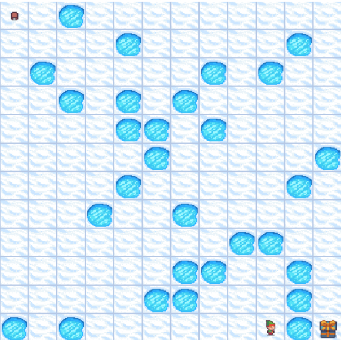

JoaoESmoreira
Frozen Lake Problem
This project aims to investigate the performance of three search algorithms applied to the Frozen Lake Problem. The developed strategies include a Simple Evolutionary Algorithm (SEA), Q-table Evolution, and an Ant Colony-based Model (ACO). Each algorithm is evaluated on three maps of increasing complexity — 4×4, 8×8, and 12×12 — and the results are compared in terms of problem-solving efficiency, solution quality, and population diversity.
The full repository and documentation can be found here: Frozen Lake Repository.
Technologies Used
To run the project correctly, the following technologies are required:
- python 3.10+
- gymnasium
- pandas
- numpy
- matplotlib
- seaborn
Frozen Lake Preview
Below is a short preview of the project in action:

Frozen Lake Rules
The Frozen Lake is a classic problem in Reinforcement Learning, often used as a benchmark for sequential decision-making algorithms. In this challenge, an agent must learn to cross a frozen lake — represented as a matrix — to reach a goal without falling into holes in the ice.
The environment is represented as a grid where each cell can be one of the following:
- S (Start): The agent’s starting position.
- F (Frozen): A safe frozen surface the agent can step on.
- H (Hole): A hole in the ice; if the agent falls here, the episode ends.
- G (Goal): The final destination the agent must reach.
The goal is to train an agent to navigate from the Start to the Goal without falling into any Holes, moving only across Frozen cells. The challenge is stochastic — the agent’s movements may not always go in the intended direction due to the slippery nature of the lake.
Available Actions
The agent can move in four directions:
- 0 (Left)
- 1 (Down)
- 2 (Right)
- 3 (Up)
How the Agent Learns
The Frozen Lake problem is typically solved using Reinforcement Learning methods such as Q-Learning, SARSA, or Deep Q-Networks (DQN), where the agent learns an optimal policy through exploration and interaction with the environment, guided by rewards and penalties.
In this project, however, we explore an alternative approach using Evolutionary Computation Techniques, including a simple evolutionary model, Q-table evolution, and an ant colony optimization-inspired algorithm.
💡 Contributions
Contributions are always welcome! If you have suggestions, improvements, or new ideas to enhance the project, feel free to open a pull request or share your feedback.
This README provides a foundational overview of the Frozen Lake problem and a starting point for implementing various solution strategies. You are encouraged to adapt and expand it according to your needs or research goals.
Usage
Generate Instances
python3 problem.py --generate-data true
Run an Algorithm
pypy3 problem.py --input-file data/MAP_4_BY_4/input01.txt --algorithm random
Repository Structure
- data/ Contains the input dataset files used for the experiments.
- src/
Contains the main source code and experiment scripts.
- data/ – Input files for the experiments.
- output/ – Results generated by each algorithm:
- aco/ – Execution results of the Ant Colony Optimization algorithm.
- qtables/ – Execution results of the Q-Table Evolution algorithm.
- sea/ – Execution results of the Simple Evolutionary Algorithm.
- stats/ – Analysis of experimental results.
- output.txt – Summary file with the best results according to statistical metrics.
- docs/ Contains project documentation and reports (PDF).
- README.md Project overview and execution instructions.
- requirements.txt Python dependencies required to run the project.
Footer
Copyright © 2025 Joao ES Moreira
The contents of this website are licensed under the Creative Commons Attribution-NoDerivatives 4.0 International License (CC-BY-ND 4.0).
The source code of this website is licensed under the MIT license, and available in GitHub repositor. User-submitted contributions to the site are welcome, as long as the contributor agrees to license their submission with the CC-BY-ND 4.0 license.